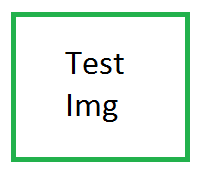

This 0.1.0 release is just for testing docs and release system.
This is a custom image for this version: 
This is an image for all versions: 
Links without extension:
* link to other md file as markdown: link
* link to other md file as html: link
Great discovery: links without extension don't work...
Links with extension:
* link to other md file as markdown: link
* link to other md file as html: link
Great discovery: links without extension don't work...
Usage
Jedoc is available on Maven Central. To use it, put this in the dependencies section of your pom.xml:
<dependency>
<groupId>eu.trentorise.opendata</groupId>
<artifactId>jedoc</artifactId>
<version>0.1.0</version>
</dependency>
In case updates are available, version numbers follows semantic versioning rules.
Test code can be found in in test directory todo review
Test code can be found in in test directory! todo review